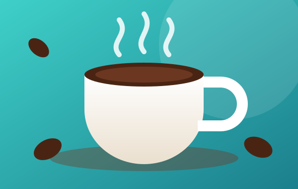
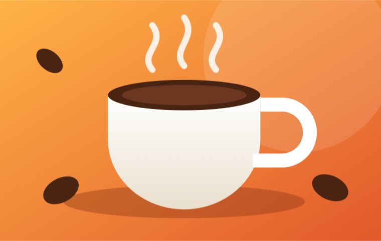
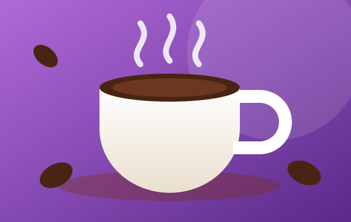
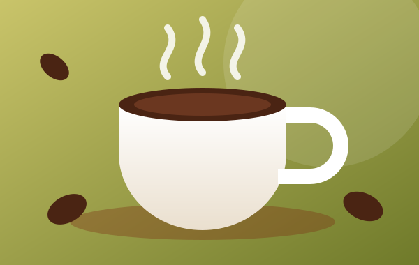
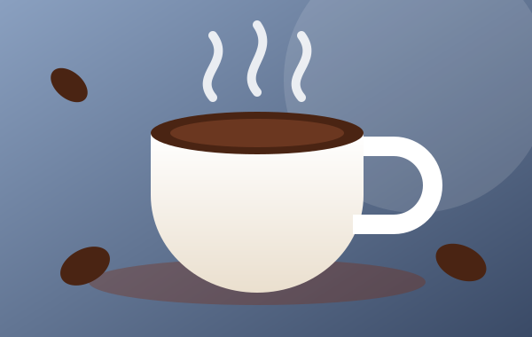
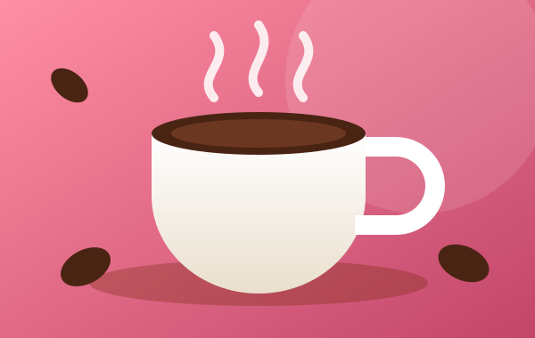

Morning cup, flat illustrationpixelpantry.example

Coffee cup with beansroastery-art.example

Espresso, purple backgroundstockbrew.example

Cup of coffee iconiconbarn.example

Steaming mugmugshots.example

Latte illustrationpixelpantry.example
Coffee break clipartclipcorner.example
Dark roast posterstockbrew.example